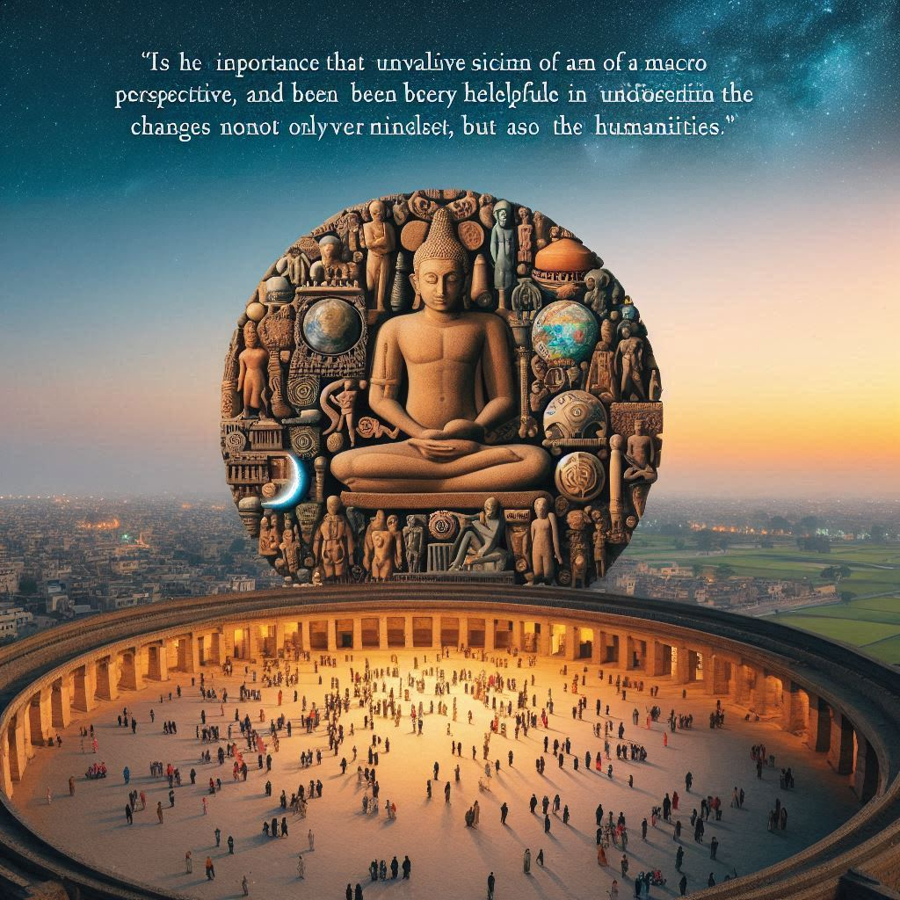

사피엔스
목차
작가
유발 하라리
출판일
2011년
감상평에 대한 AI그림
인류의 역사를 거시적인 관점으로 풀어낸 책으로, 인간의 사고방식과 사회 구조의 변화를 이해하는 데 큰 도움이 되었다. 과학뿐만 아니라 인문학적 관점도 함께 고려하는 통합적 사고의 중요성을 느꼈다.

감상평에 대한 AI평가
인류 역사를 단순한 사건의 나열이 아닌, 사고방식과 사회 구조의 진화라는 관점에서 바라보려는 비판적 사고가 감상평에 강하게 드러난다. 과학과 인문학을 넘나드는 통합적 사고에 대한 갈망이 느껴지며, 인류라는 종의 본질과 발전 방향에 대한 깊은 사유가 엿보인다. 특히, 인간 사회의 발전이 유전자와 문화의 상호작용 속에서 이뤄졌다는 관점에 대해 흥미를 느낀 점에서 지적 호기심과 철학적 질문을 동시에 품고 있음을 알 수 있다.